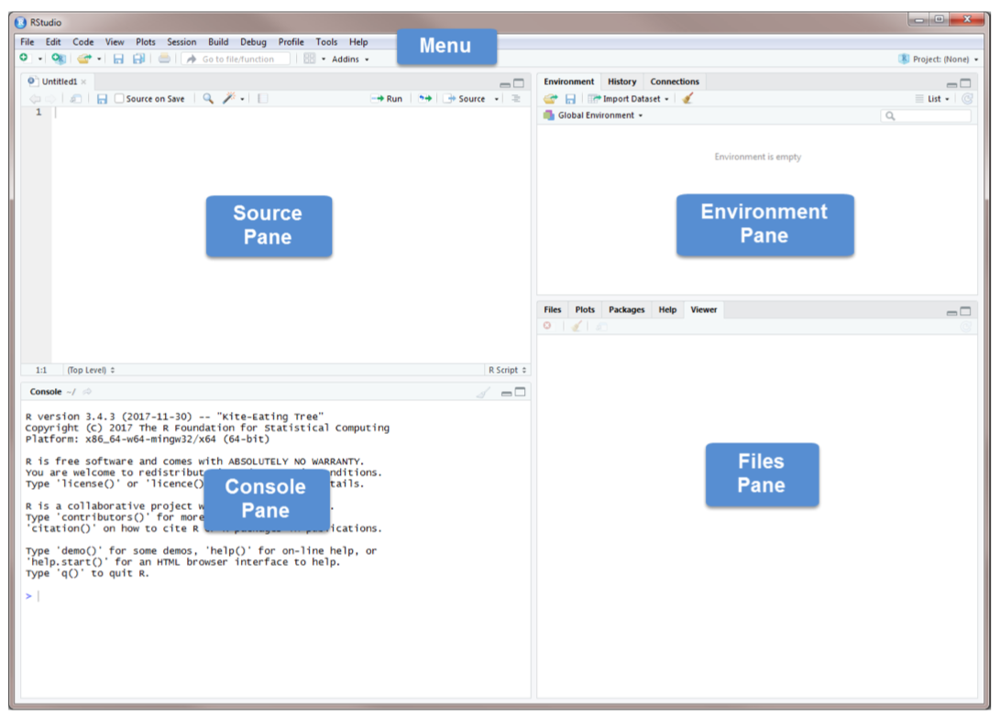
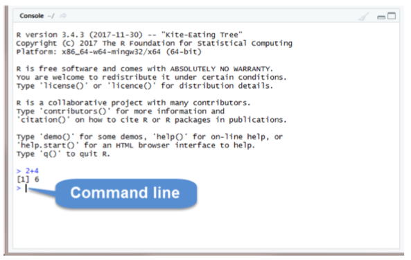
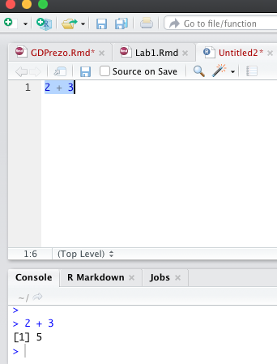
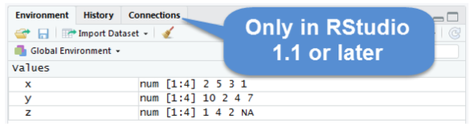
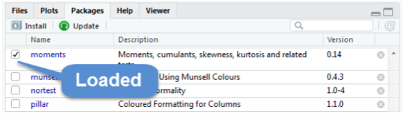

Chapter 34 R Lab 1 - Basics I
What we will review in this lab:
- R, RStudio, and R Packages,
- Starting with RStudio,
- Working Directory,
- Data Types and Structures (Vectors and Matrices),
- R-Style Guide
34.1 R, RStudio, and R Packages
R is both a programming language and software environment for statistical computing, which is free and open-source.
With ever increasing availability of large amounts of data, it is critical to have the ability to analyze the data and learn from it for making informed decisions. Familiarity with software such as R allows users to visualize data, run statistical tests, and apply machine learning algorithms. Even if you already know other software, there are still good reasons to learn R:
R is free. If your future employer does not already have R installed, you can always download it for free, unlike other proprietary software packages that require expensive licenses. You can always have access to R on your computer.
R gives you access to cutting-edge technology. Top researchers develop statistical learning methods in R, and new algorithms are constantly added to the list of packages you can download.
R is a useful skill. Employers that value analytics recognize R as useful and important. If for no other reason, learning R is worthwhile to help boost your resume.
To get started, you will need to install two pieces of software:
R, the actual programming language: Download it from here. – Chose your operating system, and select the most recent version.
RStudio, an excellent integrated development environment (IDE) for working with R, an interface used to interact with R: Download it from here.
The following notes will serve as an introduction to the R basics that we will need in this book. At the beginning, these introductory R subjects may feel like an overwhelming amount of information. You are not expected to pick up everything the first time through. You should try all of the code from these examples and solve the practice exercises.
R is used both for software development and data analysis. We will not use it for software development but apply some concepts in that area. Our main goal will be to analyze data, but we will also perform programming exercises that help illustrate certain algorithmic concepts.
Here is a very good article about R and Programming that everybody should read: 7 Reasons for policy professionals to get into R programming in 2019 (Jones_2019?).
34.2 RStudio

Source Pane, click on the plus sign in the top left corner. From the drop-down menu, select R Script . As shown in that dropdown menu, you can also open an R Script by pressing Ctrl+Shift+N. You should now see the screen above.
The Console Pane is the interface to R. If you opened R directly instead of opening RStudio, you would see just this console. You can type commands directly in the console. The console displays the results of any command you run. For example, type 2+4 in the command line and press enter. You should see the command you typed, the result of the command, and a new command line.

To clear the console, you press Ctrl+L or type cat(“\014”) in the command line.
R code can be entered into the command line directly (in Console Pane) or saved to a script (Source Pane).
Let’s try some coding.
2 + 3 #write this on the command line and hit Enter## [1] 5Now write the same line into the script in Source Pane and run it

The Source Pane is a text editor where you can type your code before running it. You can save your code in a text file called a script. Scripts have typically file names with the extension .R. Any text shown in green is a comment in the script. You write a comment by adding a # to an RScript. Anything to the right of a # is considered a comment and is thus ignored by R when running code. Place your cursor anywhere on the first few lines of code and click Run. You can also run code by pressing Ctrl+Enter.

The Environment Pane includes an Environment, a History tab, and a Connections tab. The Connections tab makes it easy to connect to any data source on your system.
The Environment tab displays any objects that you have created during your R session. For example, we created three variables: \(x\), \(y\), and \(z\). R stored those variables as objects, and you can see them in the Environment pane. We will discuss R objects in more detail later. If you want to see a list of all objects in the current session, type ls() in the command line. You can remove an individual object from the environment with the rm() command. For example, remove x by typing rm(x) in the command line. You can remove all objects from the environment by clicking or typing rm(list=ls()) in the command line. The History tab keeps a record of all the commands you have run. To copy a command from the history into the console, select the command and press Enter.
The Files Pane includes several tabs that provide useful information. The Files tab displays the contents of your working directory. The Plot tab shows all graphs that you have created. The Packages tab displays the R packages that you have installed in your System Library. An R package typically includes code, data, documentation for the package and functions inside, and tests to check everything works as it should. Check to see if the package moments has been installed. If you cannot find it, you need to install it by using the command install.packages("moments"). Once you have installed the package, you need to load it using the command library(moments). Or you can use install tab and follow the instructions and the go to package to check it to activate as shown below.

The help tab has built-in documentation for packages and functions in R. The help is automatically available for any loaded packages. You can access that file by typing help(mean) or ?mean in the command line. You can also use the search bar in the help tab. One of the most difficult things to do when learning R is to know how to find help. Your very first helper should be Google where you post your error message or a short description of your issue. The ability to solve problems using this method is quickly becoming an extremely valuable skill. Ask your tutor or instructor in the lab, only after you use all other available sources.
Do not be discouraged by running into errors and difficulties when learning R. (Or any technical skill.) It is simply part of the learning process.
The Viewer tab displays HTML output. R packages such as R Markdown and Shiny create HTML outputs that you can view in the Viewer tab. We’ll see it later.
34.3 Working directory
Without further specification, files will be loaded from and saved to the working directory. The functions getwd() and setwd() will get and set the working directory, respectively.
getwd()## [1] "/Users/yigitaydede/Dropbox/toolbox"#setwd("Book2022")
#List all the objects in your local workspace using
ls()## character(0)#List all the files in your working directory using list.files() or
dir()## [1] "_bookdown_files" "_bookdown.yml"
## [3] "_main_files" "_output.yml"
## [5] "01-Intro.md" "01-Intro.Rmd"
## [7] "02-cross-refs_files" "02-Preliminaries_files"
## [9] "02-Preliminaries.md" "02-Preliminaries.Rmd"
## [11] "03-Bias-VarianceTradeoff_cache" "03-Bias-VarianceTradeoff_files"
## [13] "03-Bias-VarianceTradeoff.md" "03-Bias-VarianceTradeoff.Rmd"
## [15] "04-Overfitting_cache" "04-Overfitting_files"
## [17] "04-Overfitting.md" "04-Overfitting.Rmd"
## [19] "05-ParametricEstimations_files" "05-ParametricEstimations.md"
## [21] "05-ParametricEstimations.Rmd" "06-Basics_cache"
## [23] "06-Basics_files" "06-Basics.md"
## [25] "06-Basics.Rmd" "07-Smoothing_files"
## [27] "07-Smoothing.md" "07-Smoothing.Rmd"
## [29] "08-Nonparametric_kNN_cache" "08-Nonparametric_kNN_files"
## [31] "08-Nonparametric_kNN.md" "08-Nonparametric_kNN.Rmd"
## [33] "09-HyperTuning_cache" "09-HyperTuning_files"
## [35] "09-HyperTuning.md" "09-HyperTuning.Rmd"
## [37] "10-TuningClass_cache" "10-TuningClass_files"
## [39] "10-TuningClass.md" "10-TuningClass.Rmd"
## [41] "11-CART_files" "11-CART.md"
## [43] "11-CART.Rmd" "12-Ensemble_cache"
## [45] "12-Ensemble_files" "12-Ensemble.md"
## [47] "12-Ensemble.Rmd" "13-EnsembleApplication_cache"
## [49] "13-EnsembleApplication_files" "13-EnsembleApplication.md"
## [51] "13-EnsembleApplication.Rmd" "14-SVM_cache"
## [53] "14-SVM_files" "14-SVM.md"
## [55] "14-SVM.Rmd" "15-NN_cache"
## [57] "15-NN_files" "15-NN.md"
## [59] "15-NN.Rmd" "16-Ridge_cache"
## [61] "16-Ridge_files" "16-Ridge.md"
## [63] "16-Ridge.Rmd" "17-Lasso_cache"
## [65] "17-Lasso_files" "17-Lasso.md"
## [67] "17-Lasso.Rmd" "18-TimeSeriesArima_cache"
## [69] "18-TimeSeriesArima_files" "18-TimeSeriesArima.md"
## [71] "18-TimeSeriesArima.Rmd" "19-TSGrid_cache"
## [73] "19-TSGrid_files" "19-TSGrid.md"
## [75] "19-TSGrid.Rmd" "20-TSEmbedding_files"
## [77] "20-TSEmbedding.md" "20-TSEmbedding.Rmd"
## [79] "21-TSRandomForest_cache" "21-TSRandomForest_files"
## [81] "21-TSRandomForest.md" "21-TSRandomForest.Rmd"
## [83] "22-TSNeural_cache" "22-TSNeural_files"
## [85] "22-TSNeural.md" "22-TSNeural.Rmd"
## [87] "23-DimensionReduction.md" "23-DimensionReduction.Rmd"
## [89] "24-SingValueDecomp.md" "24-SingValueDecomp.Rmd"
## [91] "25-RankrApprox_files" "25-RankrApprox.md"
## [93] "25-RankrApprox.Rmd" "26-MoorePenroseInv.md"
## [95] "26-MoorePenroseInv.Rmd" "27-PrincipalCompAnalysis_files"
## [97] "27-PrincipalCompAnalysis.md" "27-PrincipalCompAnalysis.Rmd"
## [99] "28-FactorAnalysis_files" "28-FactorAnalysis.md"
## [101] "28-FactorAnalysis.Rmd" "29-NetworkAnalysis.md"
## [103] "29-NetworkAnalysis.Rmd" "30-RegularizedCovMatrix_files"
## [105] "30-RegularizedCovMatrix.md" "30-RegularizedCovMatrix.Rmd"
## [107] "31-RLabs.Rmd" "32-RLab2_files"
## [109] "32-RLab2.Rmd" "33-RLab3DataPrep_files"
## [111] "33-RLab3DataPrep.Rmd" "34-RLab4SimLab_cache"
## [113] "34-RLab4SimLab_files" "34-RLab4SimLab.Rmd"
## [115] "35-Appendix1_cache" "35-Appendix1_files"
## [117] "35-Appendix1.Rmd" "36-Appendix2_cache"
## [119] "36-Appendix2_files" "36-Appendix2.Rmd"
## [121] "44-citations.Rmd" "45-blocks.Rmd"
## [123] "50-references.Rmd" "adult_names.txt"
## [125] "adult_test.csv" "adult_train.csv"
## [127] "auto-mpg.csv" "book.bib"
## [129] "comt.rds" "creditcard10.RData"
## [131] "dftoronto.RData" "docs"
## [133] "fes73.rds" "hedonic.dat"
## [135] "index.md" "index.Rmd"
## [137] "irates.dat" "mnist.Rdata"
## [139] "myocarde.csv" "packages.bib"
## [141] "png" "preamble.tex"
## [143] "README.md" "render1509e62a22c04.rds"
## [145] "style.css" "table1.text"
## [147] "toolbox.Rproj" "toronto2.rds"
## [149] "wineQualityReds.csv" "YA_TextBook.md"
## [151] "YA_TextBook.rds"#As we go through this lesson, you should be examining the help page
#for each new function. Check out the help page for list.files with the
#command
?list.files
#or
help("list.files")
#Using the args() function on a function name is also a handy way to
#see what arguments a function can take.
args(list.files)## function (path = ".", pattern = NULL, all.files = FALSE, full.names = FALSE,
## recursive = FALSE, ignore.case = FALSE, include.dirs = FALSE,
## no.. = FALSE)
## NULL34.4 Data Types and Stuctures
R has a number of basic data types.
Numeric: Also known as Double. The default type when dealing with numbers. 1,1.0,42.5
Integer: 1L,2L,42L
Complex: 4 + 2i
Logical: Two possible values: TRUE and FALSE. NA is also considered logical.
Character:“a”,“Statistics”,“1plus2.”
R also has a number of basic data structures. A data structure is either homogeneous (all elements are of the same data type) or heterogeneous (elements can be of more than one data type): You can think each data structure as data container where you data is stored. Here are the main “container” or data structures. Think it as Stata or Excel spread-sheets.
Vector: 1 dimension (column OR row) and homogeneous. That is every element of the vector has to be the same type. Each vector can be thought of as a variable.
Matrix: 2 dimensions (column AND row) and homogeneous. That is every element of the matrix has to be the same type.
Data Frame: 2 dimensions (column AND row) and heterogeneous. That is every element of the data frame doesn’t have to be the same type. This is the main difference between a matrix and a data frame. Data frames are the most common data structure in any data analysis.
List: 1 dimension and heterogeneous. Data can be multiple data structures.
Array: 3+ dimensions and homogeneous.
34.5 Vectors
Many operations in R make heavy use of vectors. Possibly the most common way to create a vector in R is using the c() function, which is short for “combine.” As the name suggests, it combines a list of elements separated by commas.
c(1, 5, 0, -1)## [1] 1 5 0 -1If we would like to store this vector in a variable we can do so with the assignment operator <- or =. But the convention is <-
x <- c(1, 5, 0, -1)
z = c(1, 5, 0, -1)
x## [1] 1 5 0 -1z## [1] 1 5 0 -1Because vectors must contain elements that are all the same type, R will automatically coerce to a single type when attempting to create a vector that combines multiple types.
c(10, "Machine Learning", FALSE)## [1] "10" "Machine Learning" "FALSE"c(10, FALSE)## [1] 10 0c(10, TRUE)## [1] 10 1x <- c(10, "Machine Learning", FALSE)
str(x) #this tells us the structure of the object## chr [1:3] "10" "Machine Learning" "FALSE"class(x)## [1] "character"y <- c(10, FALSE)
str(y)## num [1:2] 10 0class(y)## [1] "numeric"If you want to create a vector based on a sequence of numbers, you can do it easily with an operator, which creates a sequence of integers between two specified integers.
y <- c(1:15)
y## [1] 1 2 3 4 5 6 7 8 9 10 11 12 13 14 15#or
y <- 1:8
y## [1] 1 2 3 4 5 6 7 8Note that scalars do not exists in R. They are simply vectors of length 1.
y <- 24 #this a vector with 1 element, 24If you want to create a vector based on a specific sequence of numbers increasing or decreasing, you can use seq()
y <- seq(from = 1.5, to = 13, by = 0.9) #increasing
y## [1] 1.5 2.4 3.3 4.2 5.1 6.0 6.9 7.8 8.7 9.6 10.5 11.4 12.3y <- seq(1.5, -13, -0.9) #decreasing. Note that you can ignore the argument labels
y## [1] 1.5 0.6 -0.3 -1.2 -2.1 -3.0 -3.9 -4.8 -5.7 -6.6 -7.5 -8.4
## [13] -9.3 -10.2 -11.1 -12.0 -12.9The other useful tool is rep()
rep("ML", times = 10)## [1] "ML" "ML" "ML" "ML" "ML" "ML" "ML" "ML" "ML" "ML"#or
x <- c(1, 5, 0, -1)
rep(x, times = 2)## [1] 1 5 0 -1 1 5 0 -1And we can use them as follows.
wow <- c(x, rep(seq(1, 9, 2), 3), c(1, 2, 3), 42, 2:4)
wow## [1] 1 5 0 -1 1 3 5 7 9 1 3 5 7 9 1 3 5 7 9 1 2 3 42 2 3
## [26] 4Another one, which can be used to create equal intervals.
g <- seq(6, 60, length = 4)
g## [1] 6 24 42 60And we can use longer names and calculate the number of elements in a vector:
length(wow)## [1] 2634.6 Subsetting Vectors
One of the most confusing subjects in R is subsetting the data containers. It’s an important part in data management and if it is done in 2 steps, the whole operation becomes quite easy:
- Identifying the index of the element that satisfies the required condition,
- Calling the index to subset the vector.
But before we start lets see a simple subsetting. (Note the square brackets)
#Suppose we have the following vector
myvector <- c(1, 2, 3, 4, 5, 8, 4, 10, 12)
#I can call each element with its index number:
myvector[c(1,6)]## [1] 1 8myvector[4:7]## [1] 4 5 8 4myvector[-6]## [1] 1 2 3 4 5 4 10 12Okay, we are ready …
#Let's look at this vector
myvector <- c(1, 2, 3, 4, 5, 8, 4, 10, 12)
#We want to subset only those less than 5
#Step 1: use a logical operator to identify the elements
#meeting the condition.
logi <- myvector < 5
logi## [1] TRUE TRUE TRUE TRUE FALSE FALSE TRUE FALSE FALSE#logi is a logical vector
class(logi)## [1] "logical"#Step 2: use it for subsetting
newvector <- myvector[logi==TRUE]
newvector## [1] 1 2 3 4 4#or better
newvector <- myvector[logi]
newvector## [1] 1 2 3 4 4This is good as it shows those 2 steps. Perhaps, we can combine these 2 steps as follows:
newvector <- myvector[myvector < 5]
newvector## [1] 1 2 3 4 4Another way to do this is to use of which(), which gives us the index of each element that satisfies the condition.
ind <- which(myvector < 5) # Step 1
ind## [1] 1 2 3 4 7newvector <- myvector[ind] # Step 2
newvector## [1] 1 2 3 4 4Or we can combine these 2 steps:
newvector <- myvector[which(myvector < 5)]
newvector## [1] 1 2 3 4 4Last one: find the 4’s in myvector make them 8 (I know hard, but after a couple of tries it will seem easier):
myvector <- c(1, 2, 3, 4, 5, 8, 4, 10, 12)
#I'll show you 3 ways to do that.
#1st way to show the steps
ind <- which(myvector==4) #identifying the index with 4
newvector <- myvector[ind] + 4 # adding them 4
myvector[ind] <- newvector #replacing those with the new values
myvector## [1] 1 2 3 8 5 8 8 10 12#2nd and easier way
myvector[which(myvector==4)] <- myvector[which(myvector==4)] + 4
myvector## [1] 1 2 3 8 5 8 8 10 12#3nd and easiest way
myvector[myvector==4] <- myvector[myvector==4] + 4
myvector## [1] 1 2 3 8 5 8 8 10 12What happens if the vector is a character vector? How can we subset it? We can use grep() as shown below:
m <- c("about", "aboard", "board", "bus", "cat", "abandon")
#Now suppose that we need to pick the elements that contain "ab"
#Same steps again
a <- grep("ab", m) #similar to which() that gives us index numbers
a## [1] 1 2 6newvector <- m[a]
newvector## [1] "about" "aboard" "abandon"34.7 Vectorization or vector operations
One of the biggest strengths of R is its use of vectorized operations. Lets see it in action!
x <- 1:10
x## [1] 1 2 3 4 5 6 7 8 9 10x+1## [1] 2 3 4 5 6 7 8 9 10 112 * x## [1] 2 4 6 8 10 12 14 16 18 202 ^ x## [1] 2 4 8 16 32 64 128 256 512 1024x ^ 2## [1] 1 4 9 16 25 36 49 64 81 100sqrt(x)## [1] 1.000000 1.414214 1.732051 2.000000 2.236068 2.449490 2.645751 2.828427
## [9] 3.000000 3.162278log(x)## [1] 0.0000000 0.6931472 1.0986123 1.3862944 1.6094379 1.7917595 1.9459101
## [8] 2.0794415 2.1972246 2.3025851Its like a calculator!
y <- 1:10
y## [1] 1 2 3 4 5 6 7 8 9 10x + y## [1] 2 4 6 8 10 12 14 16 18 20How about this:
y <- 1:11
x + y## Warning in x + y: longer object length is not a multiple of shorter object
## length## [1] 2 4 6 8 10 12 14 16 18 20 12OK, the warning is self-explanatory. But what’s “12” at the end?
It’s the sum of the first element of x, which is 1 and the last element of y, which is 11.
34.8 Matrices
R stores matrices and arrays in a similar manner as vectors, but with the attribute called dimension. A matrix is an array that has two dimensions. Data in a matrix are organized into rows and columns. Matrices are commonly used while arrays are rare. We will not see arrays in this book. Matrices are homogeneous data structures, just like atomic vectors, but they can have 2 dimensions, rows and columns, unlike vectors.
Matrices can be created using the matrix function.
#Let's create 5 x 4 numeric matrix containing numbers from 1 to 20
mymatrix <- matrix(1:20, nrow = 5, ncol = 4) #Here we order the number by columns
mymatrix## [,1] [,2] [,3] [,4]
## [1,] 1 6 11 16
## [2,] 2 7 12 17
## [3,] 3 8 13 18
## [4,] 4 9 14 19
## [5,] 5 10 15 20class(mymatrix)## [1] "matrix" "array"dim(mymatrix)## [1] 5 4mymatrix <- matrix(1:20, nrow = 5, ncol = 4, byrow = TRUE)
mymatrix## [,1] [,2] [,3] [,4]
## [1,] 1 2 3 4
## [2,] 5 6 7 8
## [3,] 9 10 11 12
## [4,] 13 14 15 16
## [5,] 17 18 19 20We will be using two different variables. Following the usual mathematical convention, lower-case x (or any other letter), which stores a vector and capital X, which stores a matrix. We can do this because R is case sensitive.
34.9 Matrix Operations
Now some key matrix operations:
X <- matrix(1:9, nrow = 3, ncol = 3)
Y <- matrix(11:19, nrow = 3, ncol = 3)
A <- X + Y
A## [,1] [,2] [,3]
## [1,] 12 18 24
## [2,] 14 20 26
## [3,] 16 22 28B <- X * Y
B## [,1] [,2] [,3]
## [1,] 11 56 119
## [2,] 24 75 144
## [3,] 39 96 171#The symbol %*% is called pipe operator.
#And it carries out a matrix multiplication
#different than a simple multiplication.
C <- X%*%Y
C## [,1] [,2] [,3]
## [1,] 150 186 222
## [2,] 186 231 276
## [3,] 222 276 330Note that X * Y is not a matrix multiplication. It is element by element multiplication. (Same for X / Y). Instead, matrix multiplication uses %*%. Other matrix functions include t() which gives the transpose of a matrix and solve() which returns the inverse of a square matrix if it is invertible.
matrix() function is not the only way to create a matrix. Matrices can also be created by combining vectors as columns, using cbind(), or combining vectors as rows, using rbind(). Look at this:
#Let's create 2 vectors.
x <- rev(c(1:9)) #this can be done by c(9:1). I wanted to show rev()
x## [1] 9 8 7 6 5 4 3 2 1y <- rep(2, 9)
y## [1] 2 2 2 2 2 2 2 2 2A <- rbind(x, y)
A## [,1] [,2] [,3] [,4] [,5] [,6] [,7] [,8] [,9]
## x 9 8 7 6 5 4 3 2 1
## y 2 2 2 2 2 2 2 2 2B <- cbind(x, y)
B## x y
## [1,] 9 2
## [2,] 8 2
## [3,] 7 2
## [4,] 6 2
## [5,] 5 2
## [6,] 4 2
## [7,] 3 2
## [8,] 2 2
## [9,] 1 2#You can label each column and row
colnames(B) <- c("column1", "column2")
B## column1 column2
## [1,] 9 2
## [2,] 8 2
## [3,] 7 2
## [4,] 6 2
## [5,] 5 2
## [6,] 4 2
## [7,] 3 2
## [8,] 2 2
## [9,] 1 2Here are some operations very useful when using matrices:
rowMeans(A)## x y
## 5 2colMeans(B)## column1 column2
## 5 2rowSums(B)## [1] 11 10 9 8 7 6 5 4 3colSums(A)## [1] 11 10 9 8 7 6 5 4 3Last thing: When vectors are coerced to become matrices, they are column vectors. So a vector of length n becomes an \(n \times 1\) matrix after coercion.
x## [1] 9 8 7 6 5 4 3 2 1X <- as.matrix(x)
X## [,1]
## [1,] 9
## [2,] 8
## [3,] 7
## [4,] 6
## [5,] 5
## [6,] 4
## [7,] 3
## [8,] 2
## [9,] 134.10 Subsetting Matrix
Like vectors, matrices can be subsetted using square brackets, [ ]. However, since matrices are two-dimensional, we need to specify both row and column indices when subsetting.
Y## [,1] [,2] [,3]
## [1,] 11 14 17
## [2,] 12 15 18
## [3,] 13 16 19Y[1,3]## [1] 17Y[,3]## [1] 17 18 19Y[2,]## [1] 12 15 18Y[2, c(1, 3)] # If we need more than a column (row), we use c()## [1] 12 18Conditional subsetting is the same as before in vectors.
Let’s solve this problem: what’s the number in column 1 in Y when the number in column 3 is 18?
Y## [,1] [,2] [,3]
## [1,] 11 14 17
## [2,] 12 15 18
## [3,] 13 16 19Y[Y[,3]==18, 1]## [1] 12#What are the numbers in a row when the number in column 3 is 18?
Y[Y[,3]==19, ]## [1] 13 16 19#Print the rows in Y when the number in column 3 is more than 17?
Y[Y[,3] > 17, ]## [,1] [,2] [,3]
## [1,] 12 15 18
## [2,] 13 16 19We will see later how these conditional subsetting can be done much smoother with data frames.
34.11 R-Style Guide
The idea is simple: your R code, or any other code in different languages, should be written in a readable and maintainable style. Here is a blog by Roman Pahl that may help you develop a better styling in your codes. (You may find in some chapters and labs that my codes are not following the “good” styling practices. I am trying to improve!)
Next: Lists and data frames